그날 한 일을 적어 상신하면 팀장이 먼저 결재하고, 팀장이 부장·상무·대표 중 누구에게 올릴지 정해 넘깁니다. 왼쪽 메뉴 「업무일지」에서 씁니다. board 에서 한 일(차량 등록·ERP 요청·사진 등)과 그날 구매확정한 차는 저절로 기록되니, 따로 옮겨 적지 않아도 됩니다.
빈 일지에서 [하루 틀 만들기 (09~18시)]를 누르면 한 시간마다 줄이 생깁니다. 「위치」(사무실·매매단지·경매장 등 — 목록에서 고르거나 직접 입력), 「한 일」, 「비고」를 적으면 바로 자동 저장됩니다. 빈 줄은 상신할 때 빠지니 지우지 않아도 됩니다. 줄을 더 넣으려면 [+ 줄 추가](지금 시각이 들어감), 어제와 비슷하면 [전날 일지 불러오기].
맨 위 파란 상자에는 어제 적은 「내일 예정업무」가 보입니다.
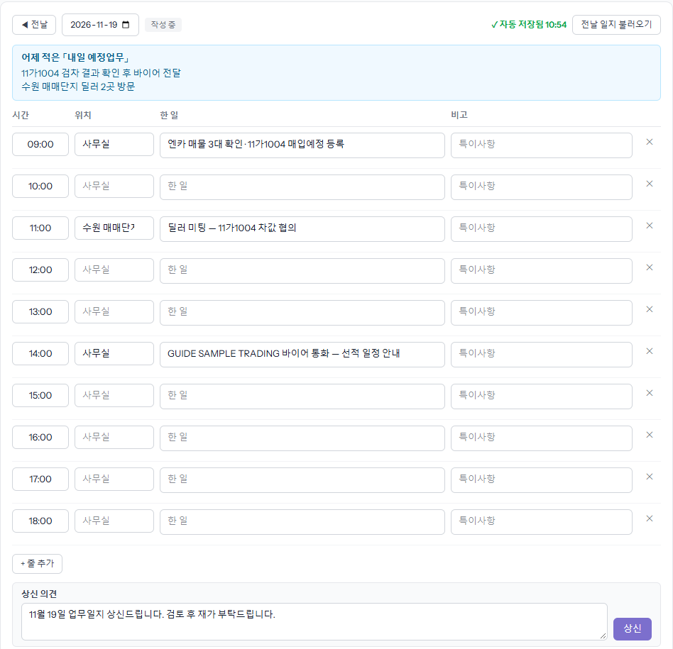
「금일 계약 차량」은 오늘 내가 [구매확정]한 차가 바이어·차량번호·판매금액으로 자동으로 모입니다(총 대수·통화별 합계). 고칠 칸은 없습니다. 그 아래 「내일 예정업무」와 「특이사항」을 적습니다. 내일 예정업무는 다음 날 일지 맨 위에 다시 보입니다.
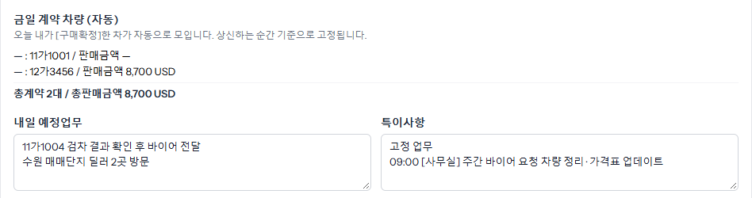
화면 맨 아래 「고정 업무」를 펼쳐 요일·시간·위치·내용을 넣고 [추가]합니다. 그 요일에 [하루 틀 만들기]를 누르면 그 시간 줄에 미리 채워지고, 「특이사항」 첫머리에도 목록으로 들어갑니다(엑셀에서는 특이사항 칸에 나옵니다). 필요 없으면 지우고 씁니다.
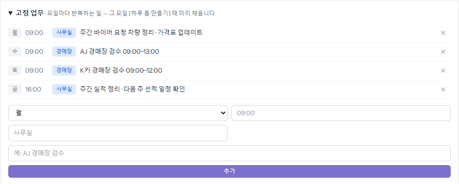
줄 아래 「상신 의견」 칸에 「11월 19일 업무일지 상신드립니다. 검토 후 재가 부탁드립니다.」가 미리 적혀 있습니다. 그대로 두거나 고쳐 씁니다(1단계 그림 아래쪽). [상신]을 누르면 확인 창 뒤 「결재 대기」로 바뀌고 더는 고칠 수 없습니다. 팀장이 승인하기 전까지는 [회수]해서 고친 뒤 다시 상신할 수 있습니다. 상신 마감 시각은 없습니다 — 시간 되는 대로 올리면 그날 기안에 들어갑니다.
상신한 일지는 [📄 엑셀로 내려받기]로 회사 업무일지 양식(시간·위치·한 일·비고 · 금일 계약 차량 · 내일 예정업무 · 특이사항)으로 받습니다. 최종 승인되면 엑셀에 최종 결재자와 시각이 찍힙니다. 결재자도 결재 화면의 이름 옆 링크로 받을 수 있습니다.
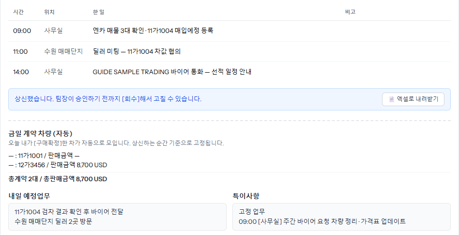
그날 board 에서 한 일이 시간·차량·한 일·진행상태로 자동으로 정리됩니다. 진행상태와 금일 계약 차량은 상신하는 순간 기준으로 고정됩니다.
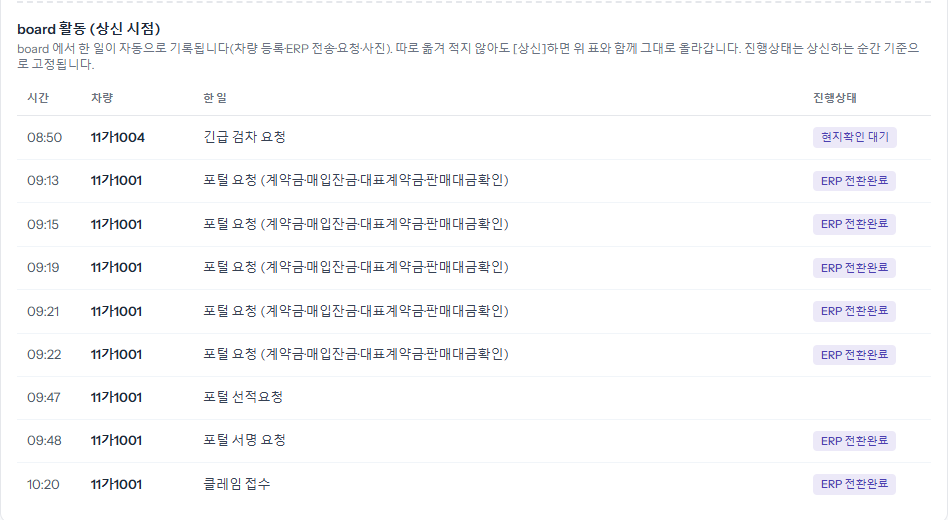
그날 상신된 일지가 한 기안으로 묶여 「결재대기」 탭에 들어옵니다. 탭은 「결재대기」(내 차례) · 「결재중」(다른 결재자 차례) · 「결재완료」 · 「반려」 네 개입니다. 위쪽 줄에 결재 순서와 지금 누구 차례인지가 보입니다. 팀장 차례일 때 보이는 부장·상무·대표는 기본값이고, 실제로 누구에게 갈지는 팀장이 승인할 때 정합니다.
사람 이름을 누르면(또는 [전체 펼치기]) 그 사람의 일지·board 활동과 「결재 이력」(상신 의견, 앞 결재자의 결재의견, 반려 사유)이 보입니다. 그 아래 「결재의견」 칸이 사람마다 하나 있습니다(선택). 적은 의견은 그 사람에게만 보입니다.
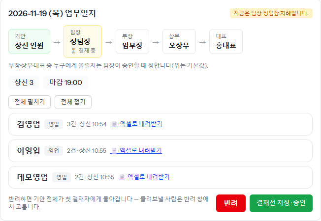
[결재선 지정 · 승인]을 누르면 창이 뜹니다. 부장·상무·대표 칸마다 그 사람을 고르거나 「— 건너뜀」을 고릅니다. 지정한 마지막 사람이 최종 결재권자이고, 창 아래에 결재 순서와 최종 결재권자가 보입니다. 한 명은 꼭 골라야 합니다. [승인 → 부장에게]를 누르면 그 순서로 넘어갑니다. 클레임 [결재 요청]과 같은 창입니다.
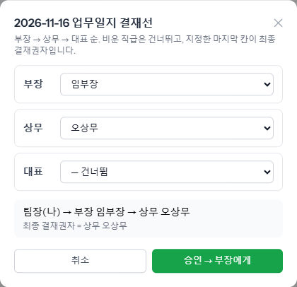
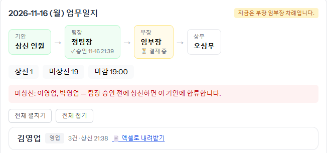
내 차례가 오면 「결재대기」에 들어옵니다. 필요한 사람에게 결재의견을 달고 [승인 → 상무에게]처럼 다음 사람 이름이 적힌 버튼을 누릅니다. 최종 결재권자는 [승인 → 최종 승인]입니다.
팀장·부장·상무·대표 누구나 자기 차례에 반려할 수 있습니다. 창에 반려 사유(필수)를 적고, 돌려보낼 사람을 체크합니다(여러 명 가능).
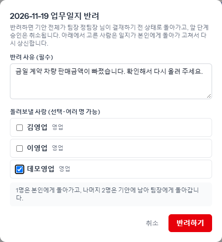
일지 위에 「상무 오상무 반려」와 사유가 빨갛게 뜹니다. 적은 내용은 그대로 있으니 필요한 곳만 고치고, 「상신 의견」에 무엇을 고쳤는지 적어 [상신]합니다. 같은 기안에 다시 들어가 나머지 사람들과 모입니다.
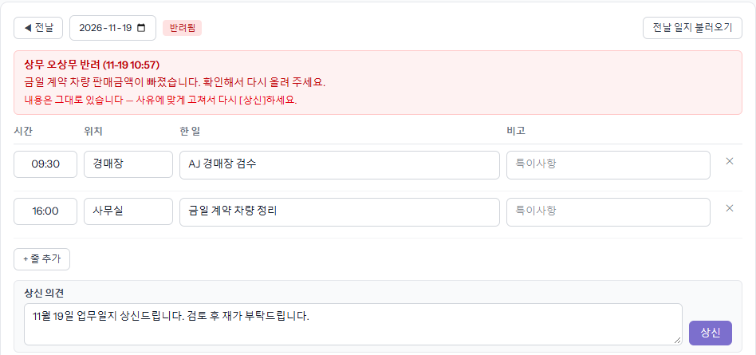
재상신한 뒤에도 아래 「결재 이력」에 반려 사유와 상신 의견이 순서대로 남습니다.
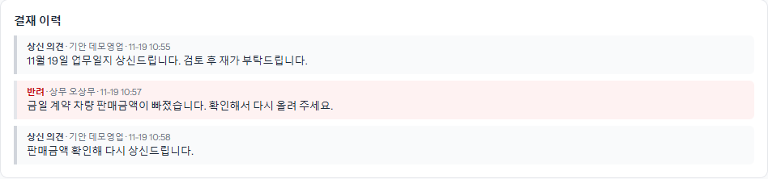
기안이 다시 팀장 차례가 됩니다. 반려됐던 사람 이름 옆에 「반려 1회」가 붙고, 아래 「기안 반려 이력」에 누가·언제·누구를·왜 돌려보냈는지가 보입니다. 이 이력은 다음 결재자에게도 그대로 보입니다. [결재선 지정 · 승인]을 누르면 지난번 결재선이 미리 골라져 있습니다.
결재 화면의 「반려」 탭에는 그 달 반려가 전부 모입니다. 팀장 선에서 반려돼 위로 올라가지 않은 것도 부장·상무·대표가 여기서 봅니다. 작성자는 자기 일지 화면 아래 「내 반려 이력」에서 날짜별로 봅니다.
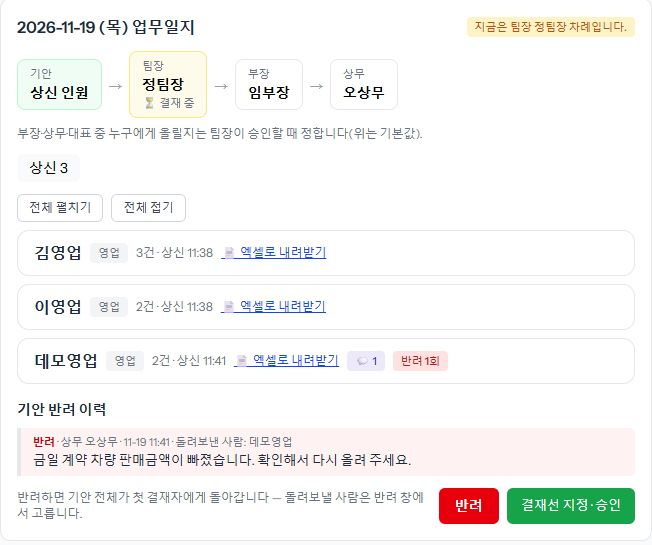
최종 승인되면 「결재 완료」로 바뀝니다. 아래 「결재 이력」에 내 상신 의견과 결재자가 나에게 남긴 결재의견·반려 사유가 시간순으로 보입니다. 다른 사람 일지의 의견·반려는 보이지 않습니다.
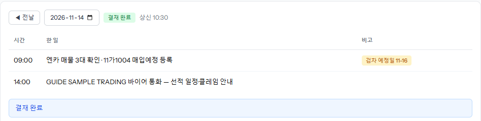
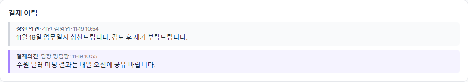